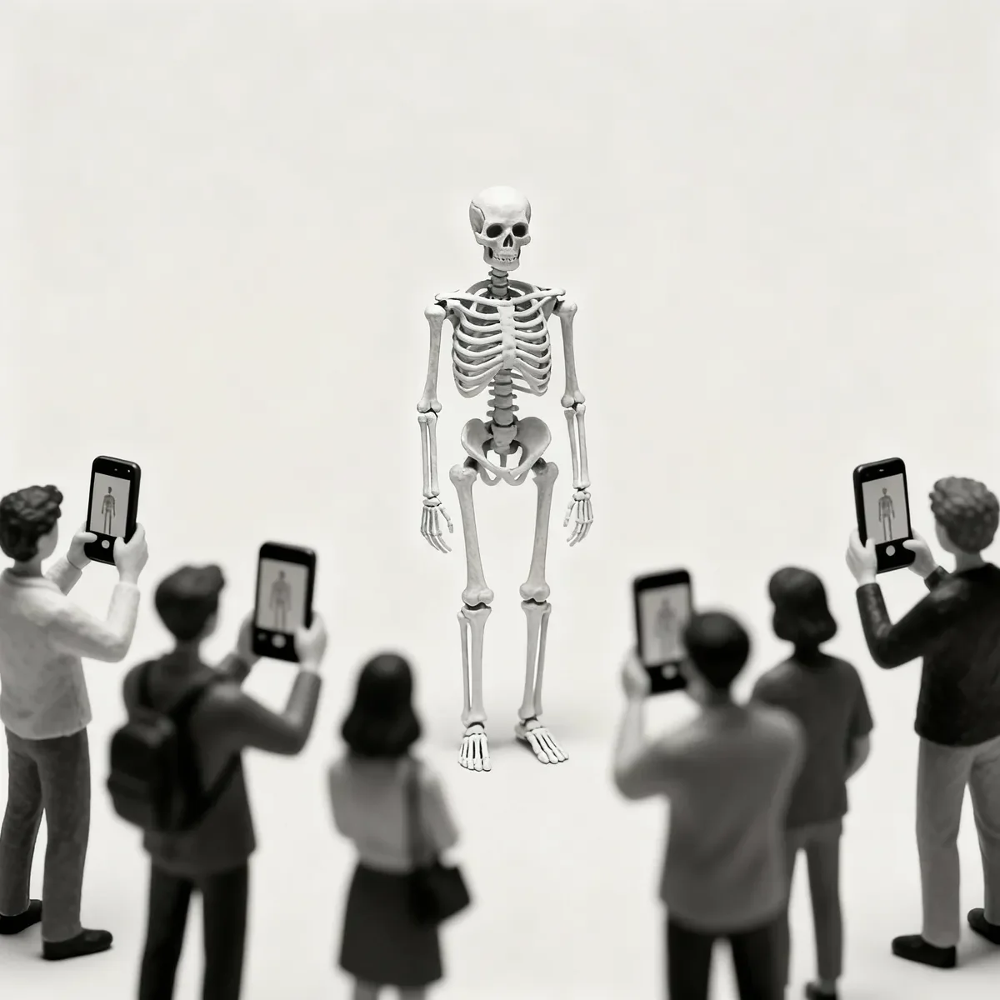

광장은 빽빽하게 들어 올린 팔들로 가득했다. 각 팔의 끝에는 손 대신 작고 빛나는 검은 유리판이 들려 있었다. 렌즈들이 숲을 이루어, 그 중심에 서 있는 불가능한 존재를 향해 있었다. 그것은 메마른 우아함으로 움직였다. 마치 생명을 얻어 튀어나온 해부도 같았고, 상아색 뼈는 병든 듯 누런 도시의 불빛 아래서 번뜩였다.
[The plaza was a thicket of raised arms, each ending not in a hand, but in a small, glowing slab of black glass. A forest of lenses, all pointed at the impossible thing that stood in their center. It moved with a dry grace, an anatomical chart sprung to life, its ivory bones gleaming under the jaundiced glare of the city lights.]
마야는 옆에 있는 십 대 소년을 바라보았다. 그의 얼굴은 라이브 스트림을 위해 만들어낸 환희로 경련하듯 일그러져 있었다. “시청자 백만 명 돌파했어, 얘들아, 백만!” 그는 화면을 위해 연출된 현실 속에서 속삭이듯 외쳤다.
[Maya watched a teenager beside her, his face a rictus of manufactured glee for his livestream. “We’re at a million viewers, guys, a million!” he hissed, his reality curated for the screen.]
그 숫자는 아무 의미도 없었다. 과도하게 자극된 도시의 신경계 속에서 일어난 순간적인 관심의 경련일 뿐이었다. 그녀는 익숙한 공허함이 자신의 속을 파내고, 강의에 출석하고 신경 경로를 암기하는 껍데기만 남기는 것을 느꼈다.
[The number meant nothing. It was a spasm of attention in the city’s overstimulated nervous system. She felt the familiar hollowness scoop her out, leaving a shell that went to lectures and memorized the pathways of nerves.]
그녀의 해부학 교과서도 똑같이 느껴졌다. 영혼을 담는 그릇이 아니라, 그녀가 고치도록 되어 있는 기계의 복잡한 지도일 뿐이었다. 군중, 라이브 스트리머, 그녀의 학업까지, 모든 것이 똑같이 판에 박힌 공허한 움직임이었다. 그녀는 그들 중 누구보다도 해골에게 더 동질감을 느꼈다.
[Her anatomy textbooks felt the same way, intricate maps of a machine she was meant to fix, not a vessel for a soul. The crowd, the livestreamer, her studies; it was all the same rote, empty motion. She felt more kinship with the skeleton than with any of them.]
바로 그때, 그것이 방향을 틀었다. 근육 없는 움직임, 뼈로 구현된 생각이었다. 두개골의 텅 빈 눈구멍이 그녀에게 고정되었다. 그 존재가 수많은 관객을 무시하고 단 한 명의 관객을 택하자 휴대폰들의 디지털음이 잦아들었다. 먼지와 종말의 맛이 나는 소리 없는 울림이 그녀의 마음속에서 피어났다.
[It pivoted then, a movement without muscle, a thought made manifest in bone. The empty sockets of its skull fixed on her. The digital chirps of the phones faltered as the thing ignored its wider audience for an audience of one. A voice bloomed in her mind, a soundless resonance that tasted of dust and finality.]
“당신은 이미 새장의 창살을 보고 있다. 나는 그저 문을 보여줄 뿐.”
[“You already see the bars of the cage. I am merely showing you the door.”]
그것은 질문이 아니었다. 진단이었다. 해골은 손을 내밀었고, 다섯 손가락뼈가 부드럽게 딸깍거렸다. 초대였다. 경비원의 경고는 멀리서 윙윙거리는 소리처럼, 무의미했다. 둘 사이의 길이 열렸다. 군중은 예의 때문이 아니라, 곧 일어날 일에 가까이 있다는 갑작스럽고 본능적인 두려움 때문에 갈라졌다.
[It wasn’t a question. It was a diagnosis. The skeleton extended its hand, the five phalanges of its carpus clicking softly. An invitation. The security guard’s warnings were a distant buzz, irrelevant. The path between them cleared, the crowd parting not out of courtesy, but a sudden, instinctual fear of proximity to whatever was about to happen.]
그녀는 그 손을 잡았다. 단단하고, 차갑고, 진짜였다.
[She took the hand. It was solid, cool, and real.]
그리고 변화가 시작되었다. 조용한 해체였다. 그녀의 피부는 찢어지는 대신 투명해질 때까지 얇아졌고, 복잡하게 얽힌 정맥과 모세혈관은 차가운 창문에 맺힌 입김처럼 사라졌다. 살점도 그 뒤를 따랐다. 떨어져 나가는 것이 아니라, 그저… 사라져 갔다. 고통이 아니었다. 해방이었다.
[And then the change began. A quiet dissolution. Her skin did not tear but thinned to transparency, the intricate web of veins and capillaries fading like breath on a cold window. Her flesh followed, not falling but simply… unbecoming. It was not pain. It was release.]
군중은 그것을 보았다. 그들은 갑자기 날이 풀려 녹아내리는 눈처럼 그녀의 뼈에서 살이 녹아내리는 것을 보았다. 그리고 그 순간, 그들의 매혹은 끔찍하게 변질되었다. 그것은 날것의, 게걸스러운 무언가, 원초적인 시기심이 되었다. 그들은 해골의 말 없는 설교를 이해하지 못했지만, 눈앞의 탈출은 이해했다. 문이 열렸고, 각자의 짐스러운 삶에서 벗어나려는 필사적이고도 맹렬한 욕망이 그들을 사로잡았다.
[The crowd saw it. They saw the flesh melt from her bones like snow in a sudden thaw. And in that moment, their fascination curdled. It became a raw, ravenous thing, a primal envy. They didn’t understand the skeleton’s silent sermon, but they understood escape when they saw it. A door had opened, and a desperate, stampeding desire to flee their own burdensome lives took hold.]
그들은 앞으로 쇄도했다, 손을 뻗은 채, 그녀를 막기 위해서가 아니라, 뒤따르기 위해서였다.
[They surged forward, hands outstretched, not to stop her, but to follow.]

그들의 집단적인 의지에 불이 붙자, 그들의 변화는 부드럽지 않았다. 그들의 것은 폭력적인 숙청이었다.
[As their collective will ignited, their transformations were not gentle. Theirs was a violent purge.]
주머니 가득한 동전을 떨어뜨리는 듯한 소리가 화강암 바닥에 울려 퍼졌다. 축 늘어진 턱에서는 치과 충전재들이 뱉어져 나왔다. 한 남자의 가슴이 경련하며 고장 난 심장을 뛰게 하던 심박 조율기를 뱉어내자 축축하고 둔탁한 소리가 났다. 역겨운 뻥 소리를 내며 뼈에서 금속 나사들이 뒤틀려 빠져나왔고, 녹아내리는 가슴에서는 실리콘 보형물이 주저앉았다. 더 이상 상징이 아닌 족쇄가 된 결혼반지가 그 아래에서 사라지는 손가락으로부터 내팽개쳐졌다. 그것은 모든 외래 인공물에 대한, 경련적이고 생물학적인 거부 반응이었다.
[A sound like a pocketful of dropped coins echoed across the granite as dental fillings spat from slack jaws. A wet, percussive thump as a man’s chest convulsed, ejecting the pacemaker that had kept his failing heart in rhythm. Metal screws twisted free from bone with sickening pops; silicone implants slumped from dissolving chests; a wedding band, no longer a symbol but a shackle, was flung from a finger that vanished beneath it. It was a convulsive, biological rejection of every foreign piece of artifice.]
사이렌이 도착을 알리며 울부짖었을 때쯤, 광장은 고요했다.
[By the time the sirens screamed their arrival, the plaza was still.]
광장은 황급히 벗어 던진 삶의 잔해들로 어지러웠다. 옷 더미 옆에는 지갑과 열쇠들이 놓여 있었다. 그러나 그 사이로, 깜박이는 비상등 아래 끔찍하게 번뜩이는 것은 몸속에 있던 것들이었다. 버려진 코트의 양모 위에서 선명하게 대조를 이루는, 잘 닦인 티타늄 대퇴골 판. 별자리처럼 흩어진 금니들. 무심한 밤하늘을 멍하니 응시하는 하나의 유리 의안.
[It was littered with the detritus of lives shed in haste. Piles of clothes lay next to wallets and keys. But among them, glinting horribly under the flashing emergency lights, were the things that had been inside. A titanium femur plate, polished and stark against the wool of a discarded coat. A constellation of gold crowns. A single glass eye, staring blankly at the indifferent night sky.]
이제 그들은 유리와 강철의 협곡 사이를, 뼈들의 고요한 회합을 이루어 움직였다. 그들은 끝이 아니었다. 그들은 해답이었다. 오직 자신의 화면에서 고개를 들어, 스스로 만든 새장 안에 이미 갇혀 있었다는 사실을 갑작스럽고 점차적인 공포와 함께 깨닫는 사람들에게만 보이는 해답.
[They moved now, a silent congress of bone, through the canyons of glass and steel. They were not an end. They were an answer, visible only to those who looked up from their screens and realized, with a sudden, dawning horror, that they were already trapped inside a cage of their own making.]